Saudi Arabia's astronaut
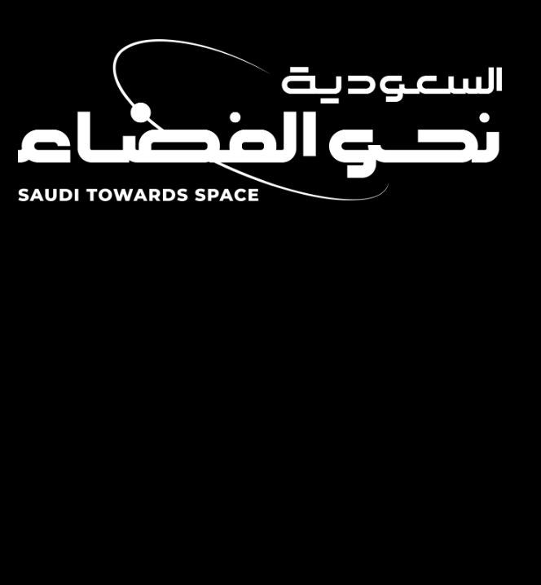
The Saudi Space Commission launched the kingdom’s first sustainable Human Space Flight (HSF) program, which aims to prepare Saudi cadres to become professional astronauts. These astronauts will be launched on both short and long stay missions to conduct research for the benefit of all humanity. The inaugural mission of this program, launching in 2023, aims to send two astronauts, the first female and second male (in space) to the International Space Station (ISS), 408 km altitude above Earth, for a short-stay mission, namely, ten days. This mission will pave the way for a sustainable HSF program, through sending Saudi astronauts on long-stay missions in the future for at least 180 days to conduct more research and expand Saudi’s contributions to science
The HSF Program is a strategic program that will enable the realization of Vision 2030 through growing Saudi’s technical human capital, diversifying the economy, and expanding sectors in Saudi. The research focus areas of the HSF program will not only benefit us on Earth but will enable future missions to the Moon and Mars. These focus areas include but are not limited to physical science, human health, biology, biotechnology, biopharma, Earth Science, in space manufacturing and technology development. Additionally, these research opportunities will foster international collaboration further enhancing Saudi’s role and contributions globally.
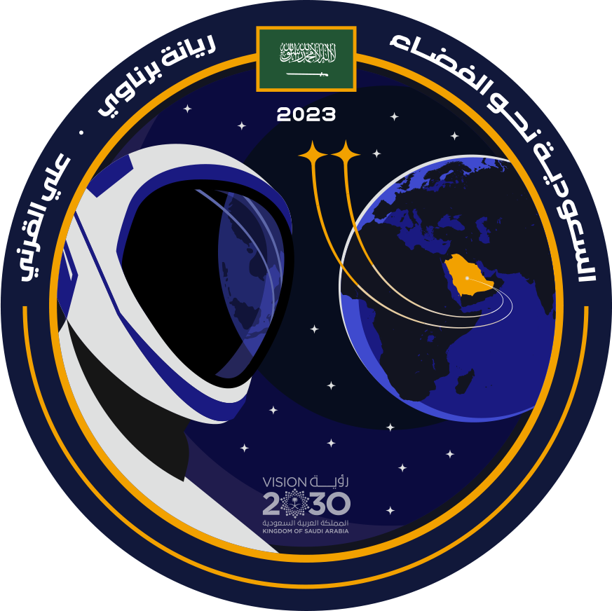
The official patch
The official patch of the Kingdom’s science mission to the International Space Station (ISS), which will include the first female Saudi and Arab Muslim astronaut, Rayyana Barnawi, as well as Ali Al-Qarni, the first Saudi astronaut to reach the International Space Station.
The patch represents the lofty goals of the Kingdom’s scientific mission to empower humans, protect the planet, and open new horizons through the set of research that will be conducted by astronauts in the fields of health and environmental sustainability, while the patch will adorn the official uniform of the flight crew, as it is customary in all space flights to have an official patch for each flight before the crew leaves the planet Earth to travel to space.
The patch of the mission confirms the Kingdom’s aspirations and commitment to supporting space exploration efforts and enhancing the role of the country’s citizens in space programs and its fields of science and technology in order to achieve the goals of the Kingdom’s Vision 2030, which seeks to emphasize the Kingdom’s role in the space sector and its technologies.
| 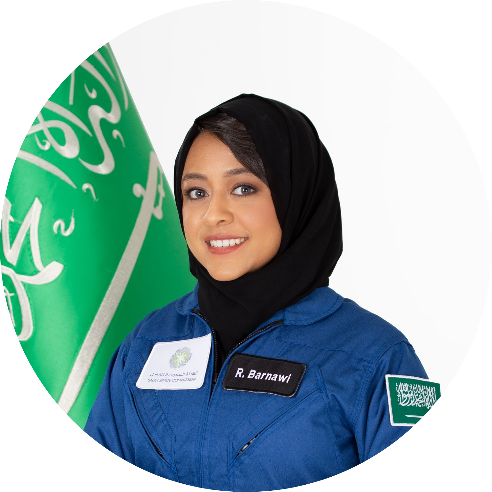 |
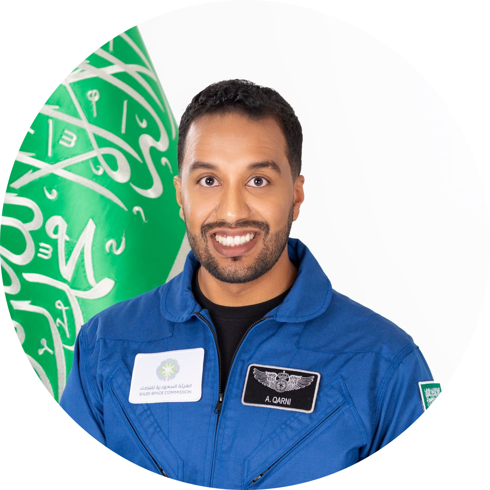 |
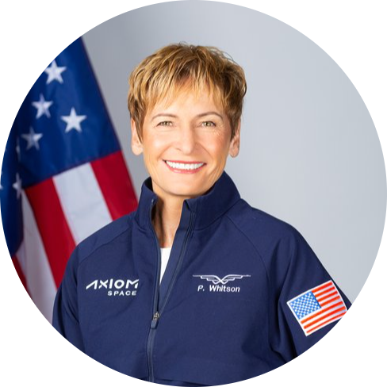 |
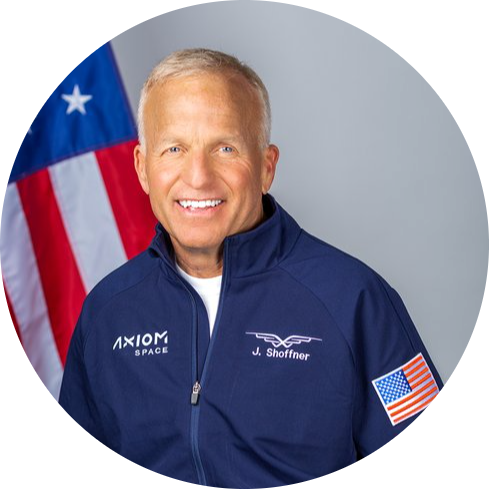 |
Rayyanah Barnawi
Saudi Astronaut |
Ali Alqarni
Saudi Astronaut |
Peggy Whitson
Astronaut |
John Shoffner
Astronaut |
About the Mission
| ROCKET |
Falcon 9 |
| VEHICLE |
Dragon |
| VEHICLE LOAD |
4 passengers |
| DESTINATION |
The International Space Station (ISS) |
Scientific Experiments Conducted By Our Astronauts
Blood-Based Biomarkers
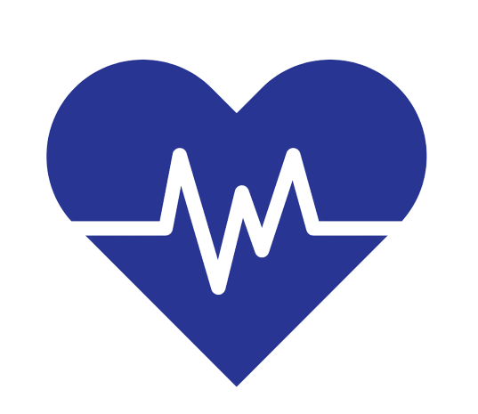
Investigate changes in blood-based biomarkers representing all brain parenchyma for SSM to determine if these flights are safe for the brain.
|
Alteration in Telomere Length
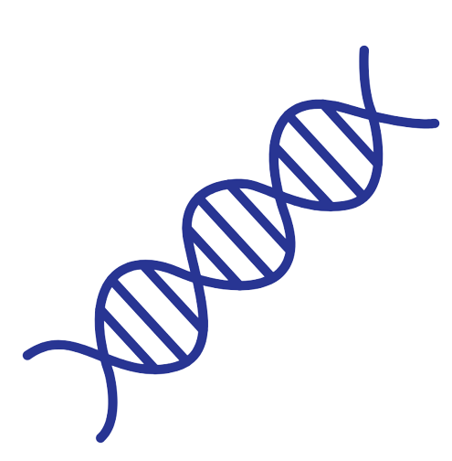
Measure the effect of SSM on the telomere length.
|
Pupillometry to Measure Intracranial Pressure

Utilize an automated pupillometer in SSM to measure changes in intracranial pressure and further our knowledge of Spaceflight Associated Neuro-ocular Syndrome (SANS).
|
Use of EEG to Measure Brain Electrical Activity
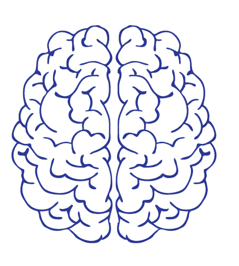
Determine the effects of the microgravity environment on the brain’s electrical activity using portable EEG.
|
Optic Nerve Sheath Diameter Measurement
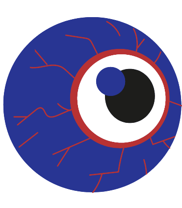
Determine optic nerve sheath diameter in astronauts during SSM.
|
Cerebral Perfusion and Alterations of Brain Position in Microgravity
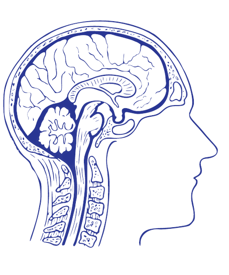
Utilize near-infrared spectroscopy as a non-invasive neuroimaging technique to measure cerebral perfusion and alterations of brain position in microgravity.
|
Cloud Seeding in Microgravity
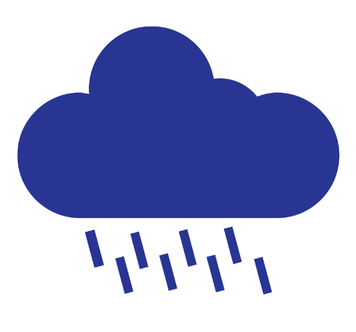
Compare the performance of cloud seeding techniques on Earth and under low gravity conditions.
|
Cell Science Experiment
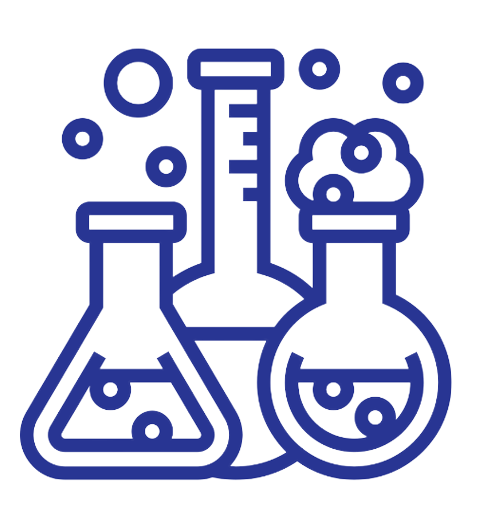
Understand the effects of microgravity on the inflammatory response using monocytes, specifically the non-adherent THP-1 macrophage cell line, and interferon response in liver cells, specifically the adherent Huh-7 cell line.
|
Educational Outreach Microgravity Experiments
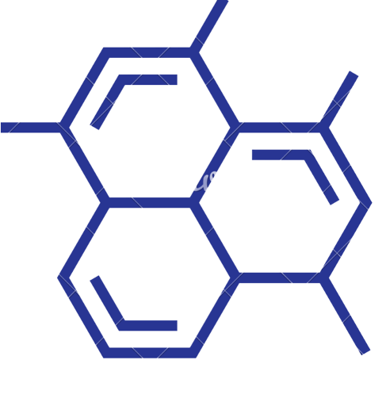
There are three different types of experiments, namely, Liquid Fireworks, Space Kite, and Heat transfer focused on fluid mechanics, aerodynamics and heat transfer, respectively. The objective of these experiments is to enable Saudi students to think critically on the effects they can have on the behavior and results of their experiments.
|